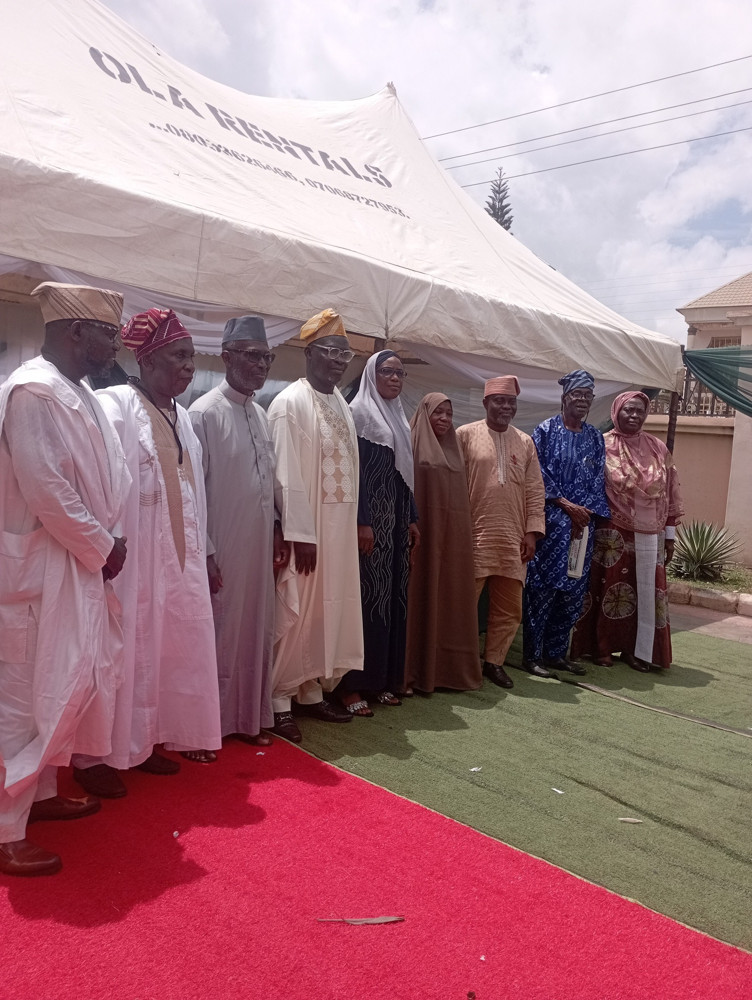
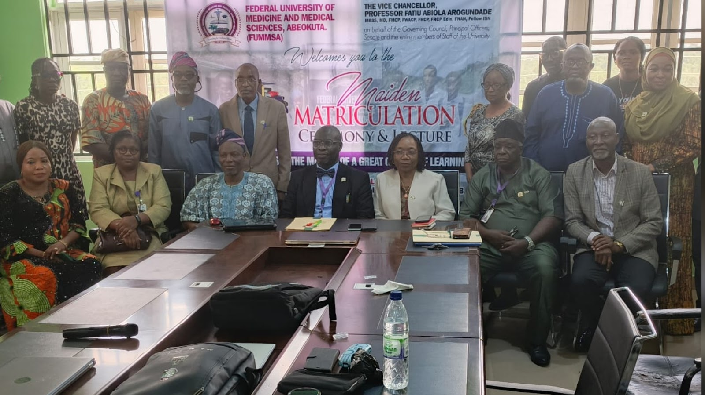

🎓 A Landmark Academic Event
Pioneer Vice Chancellor
Federal University of Medicine and Medical Sciences, Abeokuta
Presents His Inaugural Lecture
"Nephrology in Nigeria: From the Grassroots to the Frontiers — A Journey Through Kidney Disease, Health Policy and Academic Leadership"
Pioneer Vice Chancellor · FUMUMSA
A distinguished nephrologist, academic leader, and the pioneer Vice Chancellor of FUMUMSA — a trailblazer in Nigerian medical education and scholarship.
An inaugural lecture represents the crowning of an academic's contributions to knowledge. Professor Arogundade presents decades of groundbreaking research in nephrology and health policy.
Obafemi Awolowo University, Ile-Ife — one of Africa's most prestigious universities, host of this landmark event and alma mater of a giant of medicine and scholarship.
Professor Fatiu Abiola Arogundade is one of Nigeria's foremost nephrologists and a towering figure in academic medicine. He received his undergraduate medical training at the University of Lagos before advancing through the Fellowship of the Medical College of Physicians and the West African College of Physicians.
His career has been defined by a rare combination of clinical excellence, rigorous research scholarship, and transformative administrative leadership. Rising through the ranks at OAU Teaching Hospital, Ile-Ife, he became one of the most sought-after voices in nephrology in West Africa, contributing immensely to the understanding, diagnosis and management of kidney diseases in resource-limited settings.
In the crowning achievement of his distinguished administrative career, Professor Arogundade was appointed as the Pioneer Vice Chancellor of the Federal University of Medicine and Medical Sciences (FUMMSA), Abeokuta, marking a historic milestone in Nigerian medical education and his enduring legacy as an institution-builder.
Graduated from UNILAG College of Health Sciences, Lagos, laying the foundation for a legendary medical career.
Obtained the Fellowship of the National Postgraduate Medical College (NPMCN), Medical College of Physicians (FMCP) and the West African College of Physicians (FWACP), specialising in Nephrology.
Rose to the rank of Professor of Medicine at OAU in 2011, training generations of nephrologists and internists across Nigeria.
Served as Vice Dean of the Faculty of Clinical Sciences, building one of Nigeria's most vibrant nephrology units.
Appointed as the first-ever Vice Chancellor of the Federal University of Medicine and Medical Sciences, Abeokuta, a landmark in Nigerian higher education history.
Professor Arogundade has authored and co-authored numerous peer-reviewed articles, book chapters and monographs in high-impact journals. His research spans the epidemiology of chronic kidney disease (CKD) in Nigeria, acute kidney injury in tropical settings, hypertensive nephropathy, dialysis outcomes and health policy in resource-limited environments.
Pioneering work on the epidemiology of CKD in Nigeria, including landmark studies on prevalence, risk factors and outcomes.
Numerous peer-reviewed articles in leading international nephrology and internal medicine journals with significant citation impact.
Championed the establishment and expansion of dialysis services and kidney transplantation programmes in southwestern Nigeria.
Supervised and mentored scores of postgraduate students and subspecialty fellows now practising across Nigeria and internationally.
Contributed to national health policy frameworks on non-communicable diseases and kidney care at national advisory level.
Active contributor to international nephrology societies, bridging global best practices with African clinical realities.
Over the course of a distinguished career, Professor Arogundade has received numerous honours in recognition of his exceptional contributions to medicine, scholarship and public service. He is widely celebrated as a mentor, role model, and pathfinder across Nigeria and West Africa.
His appointment as Pioneer Vice Chancellor of FUMUMSA represents both a personal honour and a national recognition of the calibre of leadership he embodies — a fitting prelude to this landmark inaugural lecture at his own alma mater.
A curated selection of Professor Arogundade's peer-reviewed articles, book chapters, and policy documents — available to read and download freely.
For the complete list of publications, preprints, and conference proceedings, visit the University's institutional repository or Professor Arogundade's academic profiles below.
A pictorial celebration of academic excellence and momentous achievement


Click outside to close
Professor Fatiu Abiola Arogundade · Obafemi Awolowo University, Ile-Ife